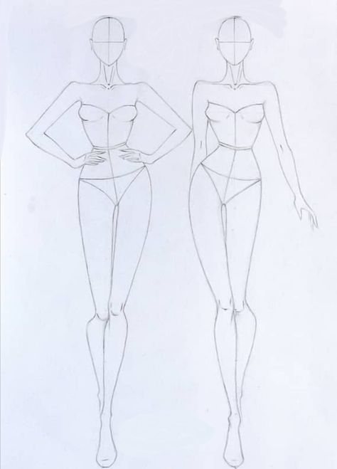

Moda é o substantivo feminino que significa uma maneira ou costume mais predominante em um determinado grupo em um determinado momento
Mais sobre a moda brasileiraExistem vários tipos de moda, como moda feminina e moda masculina. Estilos diferentes de moda, apresentam características de grupos distintos. A moda evangélica, por exemplo, está de acordo com determinados valores, com roupas que não são ousadas. Existe também a moda para gestantes, para que as mulheres grávidas tenham o maior conforto possível, vestindo roupas do seu agrado ao mesmo tempo.
Os desfiles de moda mais importantes ocorrem em grandes cidades como Milão, Paris e Nova Iorque, onde designers, estilistas ou desenhistas de moda apresentam as suas criações e estabelecem tendências para o futuro.
No ramo da matemática conhecido como estatística, a moda é o valor que aparece com maior frequência em um conjunto de dados ou em uma série de observações. No caso de dados qualitativos, quando as variáveis são nomes e não é possível determinar a mediana ou a média, a moda é importante para diminuir os dados apresentados e fazer inferências estatísticas.
